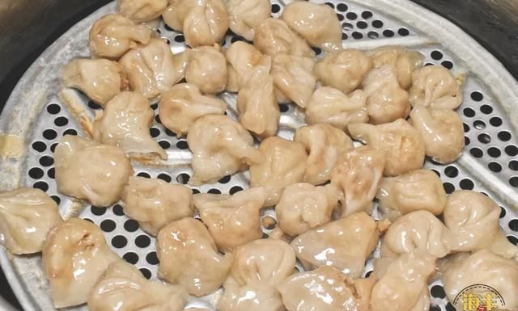
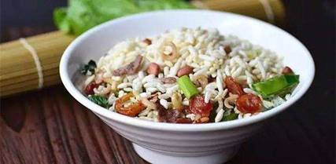
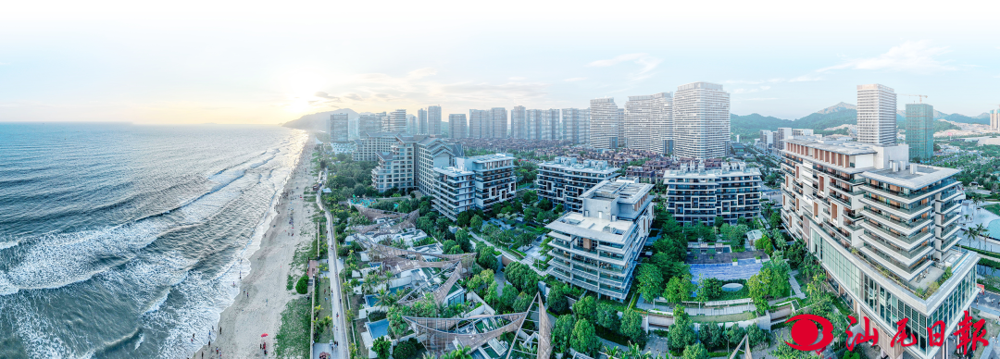
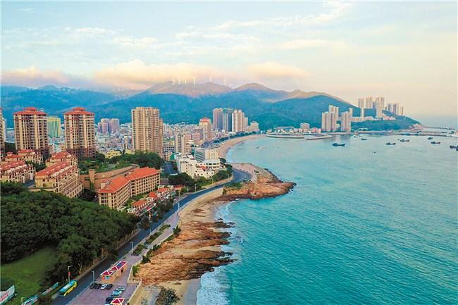

A2 DAYS / 1 NIGHT
海丰 · 两天一夜
海丰慢慢逛老城烟火，山里慢走
DAY 1 县城小吃 · 红宫红场 · 老街
DAY 2 莲花山 · 鸡鸣寺 · 午后返程

海丰小米一口，是认识一座城的开始。
不用每站都打卡，吃到喜欢的，就很好。
01 / A TASTE OF HAIFENG
咸香、清甜、热腾腾。把想尝的味道，收进自己的清单。
LOCAL FLAVOURS
A TABLE FOR EVERYONE
海鲜、蟹和热腾腾的大菜，一家人坐下来好好吃一顿。
选好饭店后，可以在「我的行程」里记下店名和位置。
02 / A WEEKEND, YOUR WAY
留在海丰慢慢吃，或多走一段海岸线。
从原来的旅行攻略出发，把每一天改成自己的节奏。
DAY 1 县城小吃 · 红宫红场 · 老街
DAY 2 莲花山 · 鸡鸣寺 · 午后返程

B3 DAYS / 2 NIGHTSDAY 1 老城人文 · 小店寻味
DAY 2 莲花山 · 鸡鸣寺 · 村落慢游
已选：汕尾市区＋红海湾 · 看海与逛吃安排一整天

C3 OR 4 DAYSDAY 1 海丰慢逛
DAY 2 中午出发，下午到岛入住
DAY 3 青澳湾 · 灯塔与海岸 · 午后返程
先选分支，再放进「我的行程」。每天的小店、停留和转场时间都可以继续修改。
PLACES TO TAKE YOUR TIME
山里的古寺、老城的故事，或海边的一阵风。点开看看，再安排进旅程。
这个组合还没有景点，换个片区或类型看看。
03 / A LITTLE SENSE OF PLACE
A LITTLE SOMETHING TO TAKE HOME
海丰的特产与伴手礼，从一袋咸香零嘴、一颗怀旧糖果和一罐莲花山茶挑起。想留个纪念，也可以看看两镇各有特色的饰品。
蒜、辣椒和胡椒腌出浓香，烘烤后还有一点焦香。只带一样零嘴回家，可以先试它。
怎么挑 先尝辣度和软硬，分送多人选小包装。
软软一颗，糖香里带一点油香。给爱吃甜、喜欢怀旧零食的朋友分几颗，刚刚好。
怎么挑 独立包装方便分送，传统做法用猪油，买时看配料表。
茶园在海丰西北部的莲花山脉。送平时爱喝茶的人，或给自己带一罐，回家慢慢泡。
怎么挑 先试饮，按喜欢的香气和浓淡选小罐。
芝麻香和米香各挑一点，配茶或放在办公室分着吃。怕路上压碎，就选硬盒。
有地理标志保护的地方农产，也叫黄花菜。挑干制密封装，带给爱下厨的人蒸菜或煲汤。
切几片跟米饭一起蒸，就是一顿家常饭。按口味挑肥瘦和甜度，照包装说明存放。
梅陇以金银首饰加工见长。想挑件平常也能戴的纪念品，可以看看小巧的银饰和吊坠，留意材质与工艺。
喜欢颜色，可以在手串和小吊坠里慢慢挑。可塘是彩宝加工与交易地，原料产地和处理方式可看商品说明。
顺手再挑一份汕尾风味 遮浪马仔也有海丰企业生产，选购时可以看包装上标的生产地。
04 / A TRIP TO CALL YOUR OWN
MAKE IT YOURS
挑好味道，填上小店，把时间留给自己。
时间和转场均可修改；转场为手动预留，未接入实时导航。填好小店地址后，可点击地图核对车程与营业时间。
A FEW LITTLE NOTES
海丰县城适合觅食；接着去汕尾或南澳时，可按后半程地点安排住宿，尽量少来回折返。
跨片区建议提前约车或自驾。车站到县城另留接驳时间，返程以实际车次倒推安排。
小吃可以分享着尝。景区开放与店铺售卖时段出发前再确认；跨城、上岛和沿海游览都留足转场时间。